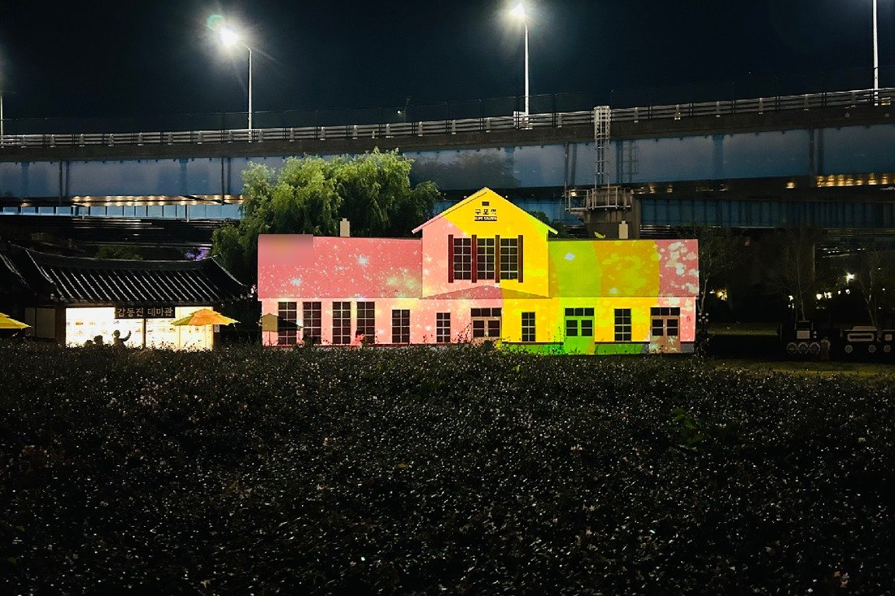

프로젝션 매핑은 건물이나 무대, 바닥을 그대로 스크린으로 써서 공간 자체를 바꾸는 연출입니다. 메이커팀은 투사할 장소를 먼저 확인하고, 영상 콘텐츠 제작과 프로젝터·미디어 서버 설치, 행사 기간 운영까지 한 팀으로 진행합니다.
이런 행사에 좋아요
- 야간 축제·지역 축제의 건물 외벽 연출
- 전시·기념관의 몰입형 영상 공간
- 행사 무대 미디어 연출
- 브랜드 팝업·다이닝 공간 연출
할 수 있는 연출
- 프로젝션 매핑·파사드: 건물 외벽, 무대, 바닥
- 인터랙티브 미디어: 카메라·깊이 센서로 관객 움직임에 반응
- 몰입형 공간: 멀티 스크린과 공간 음향
- 시스템 설계·렌탈: 빔 프로젝터, 미디어 서버, 현장 운영
협력팀 주요 작업
- 구포나루 축제: 옛 역사 건물 외벽 프로젝션 매핑
- 2025 코리아 테크 페스티벌(코엑스): 무대 미디어 영상
- 다이닝 공간 프로젝션 매핑(2025)
- 의병의 날 기념 전시 영상 연출
진행 순서
- 현장 확인: 투사면 크기·밝기·전원·설치 위치
- 연출 설계와 장비 구성 제안, 견적
- 계약: 주식회사 위메이커 명의
- 영상 콘텐츠 제작
- 프로젝터·미디어 서버 설치와 야간 테스트
- 행사 기간 운영과 철수
자주 묻는 질문
낮에도 보이나요?
프로젝션 매핑은 주변이 어두울수록 선명합니다. 야외는 해가 진 뒤 운영을 기본으로 하고, 실내는 조명을 줄일 수 있는 공간에서 진행합니다.
건물 외벽에 하려면 무엇을 확인하나요?
투사할 면의 크기와 색, 프로젝터를 둘 위치와 거리, 전원, 건물 관리 주체의 허가를 먼저 확인합니다.
영상 콘텐츠도 만들어 주나요?
네. 행사 주제에 맞춘 미디어 그래픽과 애니메이션을 제작하고 장비 설치와 운영까지 함께 맡습니다.